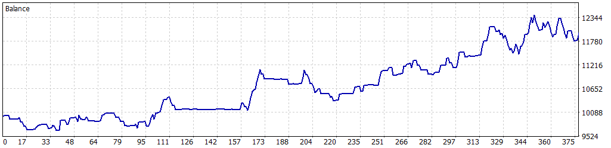
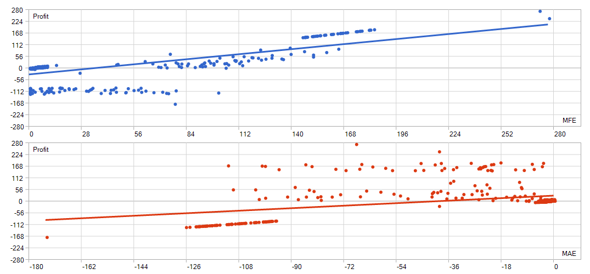

Self-training regime model for MetaTrader 5
It works out what kind of market it is in, then decides whether to trade at all.
RegimeSwitch Pro fits a hidden Markov model to the price history already sitting in your terminal, splits that history into states, and reads the probability of the next state before it sends an order. There is no downloaded signal and no fixed set of indicator thresholds to go stale.
The part that matters is the part most robots leave out: every symbol and timeframe has to pass an out-of-sample edge test before it is allowed to place a single trade. Contexts that fail sit there and do nothing.
MetaTrader 5, one licence per account, Stripe or PayPal
Trained on your own terminal
The model fits the history your broker gives you. No downloaded signal, no thresholds frozen years ago.
No out-of-sample edge, no trade
Contexts that fail validation are marked not tradable until the next retraining produces something better.
Never averages down
An ATR stop on every entry, no grid, no martingale, no recovery mode. Losses are taken at the stop.
Two independent reasons to enter, and a switch that says which one is in charge
The regime model
Each bar is reduced to two numbers: the log return over the last K bars and the bar range relative to price. A Gaussian hidden Markov model with three states is fitted to 2,500 bars of that series using Baum–Welch, restarted six times from different random seeds so a single unlucky start cannot decide the outcome.
The forward filter then gives the state probabilities at the current bar, the transition matrix projects them one step ahead, and the expected move is the probability-weighted drift over a horizon taken from each state's own persistence. A state the model expects to last twenty bars gets a longer horizon than one it expects to last three.
The reversal module
A stochastic %K/%D crossover inside the oversold or overbought zone, confirmed by a bar whose volume is at least 1.5× the recent average. Familiar, and deliberately so: it is the kind of rule a discretionary trader already reads off the chart.
What is not familiar is that the robot measures it rather than assuming it. Every retraining cycle it replays the rule across the available history, records the average return six bars after each signal, long and short separately, and keeps the result.
| Entry mode | What opens a position | Typical use |
|---|---|---|
| HMM only | The regime model alone: probability above threshold and expected move above a fraction of ATR. | Trend and continuation work on H4 and above. |
| Reversal only | The stochastic and volume rule alone, provided its measured edge is positive. | Fast mean reversion on M30 and H1. |
| Reversal, HMM veto default | The reversal fires, but the trade is dropped when the regime model points the other way. | The configuration used in the published test. |
| Either | Whichever fires first, each still subject to its own validation gate. | More trades, more exposure, more variance. |
A model that fits beautifully and predicts nothing is still a failure
Any estimator will find structure in 2,500 bars. The question is whether that structure survives contact with data the fitting never saw.
RegimeSwitch Pro holds back the last quarter of the training window, replays its own entry logic there, and measures the average forward return of the signals it would have taken. The result is expressed in basis points per bar and printed in the journal.
// Out-of-sample gate: replay the entry rule on held-back data for(int t=startIdx; t<T-1; t++) { double p,e; int st; SignalFromPost(m,post,p,e,st); // same code as live double thr = InpMinEdgeATR*atrRel; if (p>=InpMinProb && e> thr) { sumL += ret1[t+1]; nL++; } else if(p<=1.0-InpMinProb && e<-thr) { sumS += ret1[t+1]; nS++; } } m.valEdgeBp = ((sumL-sumS)/m.valSignals)*1e4; // No positive edge out of sample, no trading. No exceptions. return (m.valSignals>=InpMinValSignals && m.valEdgeBp>InpMinValEdgeBp);
From the shipped source. When this returns false the context is marked not tradable and is skipped until the next retraining cycle produces something better.
The reversal module is held to the same standard, and because it is a fixed rule rather than a fitted model, the measurement is direct: count the signals, look six bars forward, average. Fewer than twenty signals in the window, or a negative edge, and that symbol and timeframe stops taking reversal entries.
// The reversal rule, evaluated only on closed bars bool volOK = (v[t] > InpVolFactor*volAvg); // 1.5x the 10-bar mean if(!volOK) return 0; bool crossUp = (k[t-1]<=d[t-1] && k[t]>d[t]); bool crossDown = (k[t-1]>=d[t-1] && k[t]<d[t]); if(crossUp && MathMin(k[t],k[t-1])<=InpOversold) return +1; if(crossDown && MathMax(k[t],k[t-1])>=InpOverbought) return -1; return 0;
Every rule in the product is this legible. You can read what opens a position, and you can read what closes it.
Retrains as it runs
Every 250 bars each context refits and revalidates, one at a time so the terminal never freezes. Models are written to disk and reloaded on restart.
Reports what it is thinking
An hourly journal table lists every symbol and timeframe with its state, probability, measured edge, signal count and the reason it did or did not trade.
Never averages down
One position per symbol by default, an ATR stop on every entry, no grid, no martingale, no recovery mode. Losses are taken at the stop.
Twenty-eight pairs and ten timeframes from a single window
Attach it once. Each symbol carries its own list of timeframes, and each symbol-timeframe pair becomes an independent context with its own indicator handles, its own trained model and its own magic number. Up to eighty contexts on one chart, and they do not interfere with each other or with anything else running on your account.
// The whole universe, in one input string InpPreset = PRESET_MAJORS; InpSymbolSpec = "EURUSD:H1,H4; GBPUSD:H4; USDJPY:M30; USDCHF:H4; USDCAD:H4;"; InpSuffix = ""; // ".ecn", "m", "_raw" — matches your broker
Presets cover the seven majors, the twenty-one crosses, or all twenty-eight. The spec string overrides or extends them per symbol.
| Risk per trade | Position size computed from equity, the ATR stop distance and the tick value of the instrument. Fixed lot available. |
|---|---|
| Stop and target | ATR multiples, with an optional ATR trailing stop that follows the position once it moves your way. |
| Exposure caps | A hard ceiling on open positions in total and per symbol, so a correlated cluster cannot open at once. |
| Spread guard | Entries are skipped when the spread is above your limit, which matters at rollover and on news. |
| Exits | Stop, target, trailing stop, opposite reversal signal, or a flip in the model's direction, each switchable. |
| On-chart panel | A live summary of the busiest contexts: state, probability, edge and open positions. |
The numbers, and everything wrong with them
One Strategy Tester run, five symbols, 100% real ticks from a live Vantage Markets server, 1 January 2025 to 2 August 2026. Default settings: reversal with regime veto, 1% risk per trade, 2×ATR stop, 3×ATR target, trailing on, ten positions maximum.


Read this before you read the report
The run was made in the tester's pip-based profit mode. That means commission and swap are not included, so no cash return or percentage gain is quoted anywhere on this page, and you should not infer one. What the run does support is the shape of the thing: the win rate, the ratio of average win to average loss, the trade count and the drawdown relative to the stop size.
It is also a single window on a single broker's data. Nineteen months and 376 trades is enough to be interesting and nowhere near enough to be conclusive. The model trains on whatever history your own terminal holds, so your results will differ from this run by construction.
Run it on a demo account with your broker's spreads and commissions before you risk money. That is not a disclaimer, it is the correct next step.
Rent it monthly, or buy it once
Both options include the compiled expert advisor, the full input reference, the default configuration used in the published test, and email support from the person who wrote it.
Monthly
For running it live without committing up front.
€39 / month
Cancel any time, from your own Stripe or PayPal receipt.
- One MetaTrader 5 account
- All updates while active
- Email support
- Free account transfer
Lifetime licence
For traders who have run it on demo and want to keep it.
€249 once
Going to €329 after the first ten licences.
- One MetaTrader 5 account, no expiry
- All version 2.x updates included
- Priority email support
- Free account transfer
Your licence key is tied to one MetaTrader 5 account number, which the checkout asks for. Changing broker or account is free: write in and the key is reissued. Software is delivered by email, normally within a few hours and always within one working day. Paying with PayPal? You will be taken to the activation page to send your account number.
From payment to first signal
- Pay and send your account number
Stripe asks for it at checkout. If you pay with PayPal, the confirmation page collects it instead. It is the login number of the MT5 account you want to run, demo or live.
- Drop the file into MQL5/Experts and restart
The compiled .ex5 goes in the Experts folder of your terminal's data directory. Refresh the Navigator and it appears.
- Paste the key and pick your universe
One key field, one symbol spec string. Start with the default: majors, reversal with regime veto, 1% risk.
- Let it warm up
Each context trains once before it can trade, one at a time so the terminal stays responsive. On a full universe allow a few minutes. The journal table tells you exactly where it is.
- Watch the journal before you go live
The hourly table shows which contexts passed validation and which are sitting out. If most of your universe is sitting out, that is information, not a fault.
Things worth asking before you buy
Do I need to know what a hidden Markov model is?
No. You need to know that the robot estimates which of three market states it is in, that it will not trade a symbol whose model failed its own test, and that you set the risk. The mathematics is documented for people who want it and ignorable for people who do not.
Will it work on my broker?
It works on any MetaTrader 5 broker with hedging or netting, and handles symbol suffixes like .ecn or _raw through one input. Spread and commission decide whether it is profitable for you, which is why the demo run comes first.
How much history does it need?
2,500 bars per context by default, plus the validation slice. On H4 that is roughly two years. Scroll the chart back in the terminal once so the history downloads, and the models train themselves from there.
Can I run it on a VPS?
Yes, and you should if you want it running overnight. Training is spread across bars rather than done in one blocking pass, so a modest VPS handles a full universe.
What happens when the market changes?
Every 250 bars each context refits on the most recent window and revalidates. A setup that worked last quarter and stopped working drops out of the tradable set on its own. That is the entire point of the design.
Is there a refund?
Licence keys cannot be recalled once issued, so purchases are final. That is exactly why the test report is published unedited, the rules are documented, and you are told to run a demo first. If something does not work as described, write in and it gets fixed.
Will you sell me a copy without the licence check?
No.
Questions the page doesn't answer?
Write to the person who wrote the code. You will get a straight answer about whether it fits your broker, your capital and the way you trade.